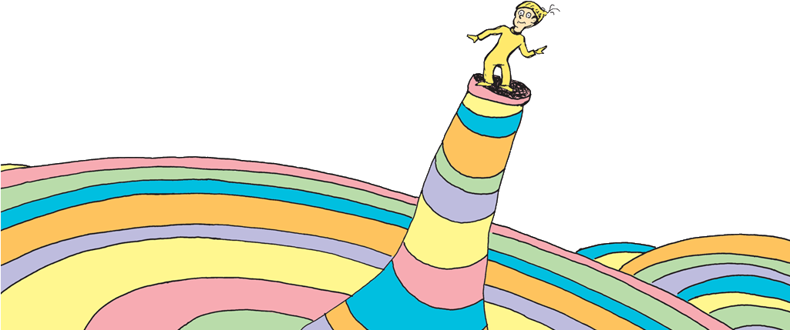

 Oh the Places She Went !
Hi! The following are locations I was able to visit for fun or for school-related events :-)
Travel Spots📌 :
Portland, Oregon
🌲
Washington D.C.
🏛
Ensenada, Baja California
☀️
Sacramento, California
💼
Santa Barbara, California
🌊
Holtville, California
🥕